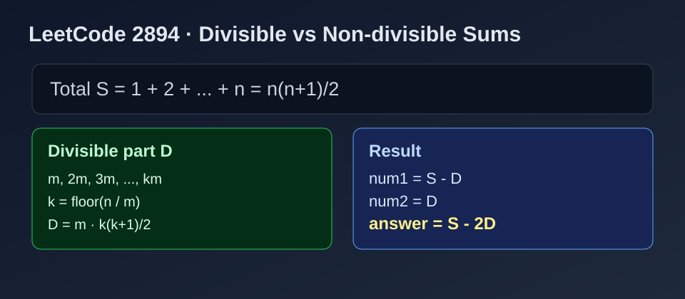

LeetCode 2894: Divisible and Non-divisible Sums Difference (Arithmetic Series Split)
LeetCode 2894MathArithmetic SeriesToday we solve LeetCode 2894 - Divisible and Non-divisible Sums Difference.
Source: https://leetcode.com/problems/divisible-and-non-divisible-sums-difference/

English
Problem Summary
Given two integers n and m, define:
- num1: sum of all integers in [1, n] that are not divisible by m.
- num2: sum of all integers in [1, n] that are divisible by m.
Return num1 - num2.
Key Insight
Instead of iterating from 1..n, compute by formulas:
- Total sum: S = n(n + 1) / 2.
- Count of multiples of m: k = n / m.
- Sum of divisible numbers: D = m * (1 + 2 + ... + k) = m * k(k + 1) / 2.
Then num1 = S - D, so answer is:
num1 - num2 = (S - D) - D = S - 2D.
Algorithm
- Compute S.
- Compute k = n / m and D.
- Return S - 2 * D.
Complexity Analysis
Time: O(1).
Space: O(1).
Reference Implementations (Java / Go / C++ / Python / JavaScript)
class Solution {
public int differenceOfSums(int n, int m) {
int total = n * (n + 1) / 2;
int k = n / m;
int divisibleSum = m * k * (k + 1) / 2;
return total - 2 * divisibleSum;
}
}func differenceOfSums(n int, m int) int {
total := n * (n + 1) / 2
k := n / m
divisibleSum := m * k * (k + 1) / 2
return total - 2*divisibleSum
}class Solution {
public:
int differenceOfSums(int n, int m) {
int total = n * (n + 1) / 2;
int k = n / m;
int divisibleSum = m * k * (k + 1) / 2;
return total - 2 * divisibleSum;
}
};class Solution:
def differenceOfSums(self, n: int, m: int) -> int:
total = n * (n + 1) // 2
k = n // m
divisible_sum = m * k * (k + 1) // 2
return total - 2 * divisible_sumvar differenceOfSums = function(n, m) {
const total = n * (n + 1) / 2;
const k = Math.floor(n / m);
const divisibleSum = m * k * (k + 1) / 2;
return total - 2 * divisibleSum;
};中文
题目概述
给定整数 n 与 m，定义：
- num1：区间 [1, n] 中不能被 m 整除的数之和。
- num2：区间 [1, n] 中能被 m 整除的数之和。
返回 num1 - num2。
核心思路
不需要遍历 1..n，直接用等差数列公式：
- 总和 S = n(n + 1)/2。
- 可被 m 整除的项数 k = n / m。
- 整除部分和 D = m * (1 + 2 + ... + k) = m * k(k + 1)/2。
因为 num1 = S - D，所以：
num1 - num2 = (S - D) - D = S - 2D。
算法步骤
- 计算总和 S。
- 计算 k = n / m 与整除部分和 D。
- 返回 S - 2D。
复杂度分析
时间复杂度：O(1)。
空间复杂度：O(1)。
多语言参考实现（Java / Go / C++ / Python / JavaScript）
class Solution {
public int differenceOfSums(int n, int m) {
int total = n * (n + 1) / 2;
int k = n / m;
int divisibleSum = m * k * (k + 1) / 2;
return total - 2 * divisibleSum;
}
}func differenceOfSums(n int, m int) int {
total := n * (n + 1) / 2
k := n / m
divisibleSum := m * k * (k + 1) / 2
return total - 2*divisibleSum
}class Solution {
public:
int differenceOfSums(int n, int m) {
int total = n * (n + 1) / 2;
int k = n / m;
int divisibleSum = m * k * (k + 1) / 2;
return total - 2 * divisibleSum;
}
};class Solution:
def differenceOfSums(self, n: int, m: int) -> int:
total = n * (n + 1) // 2
k = n // m
divisible_sum = m * k * (k + 1) // 2
return total - 2 * divisible_sumvar differenceOfSums = function(n, m) {
const total = n * (n + 1) / 2;
const k = Math.floor(n / m);
const divisibleSum = m * k * (k + 1) / 2;
return total - 2 * divisibleSum;
};
Comments